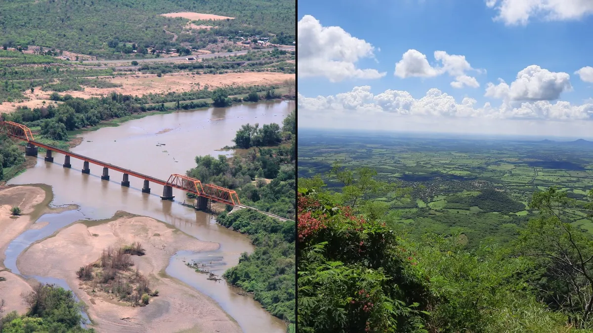

OKpolítico
OKpolíticoFuerzas federales y grupo armado se enfrentan en Guasave

La noche del 20 de noviembre de 2026, elementos de la Secretaría de la Defensa Nacional y la Guardia Nacional detuvieron a Fausto Isidro Meza Flores, alias 'El Chapo Isidro', en Guasave, Sinaloa. El gobierno de Estados Unidos ofrecía una recompensa de 5 millones de dólares por información que permitiera su captura y condena.
Compartir por WhatsAppEnfrentamientos y bloqueos en Guasave
Integrantes de un grupo armado y elementos de las fuerzas federales se enfrentaron a balazos en distintos puntos del municipio de Guasave, al norte de Sinaloa, tras una agresión a balazos en contra de las fuerzas armadas.
Derivado de estos hechos, se reportaron la quema de unidades y bloqueos en tramos carreteros como la Carretera Internacional México 15 y la Autopista Estatal Benito Juárez, además de unidades artilladas circulando por las calles y aeronaves disparando en contra de ellas. Los operativos se extendieron hacia otros municipios de los alrededores, especialmente hacia Salvador Alvarado, donde también se registraron bloqueos en caminos vecinales.
✉️ Recibe lo importante del día en tu correo. Suscríbete gratis →Llamado a la población y suspensión de actividades
La Secretaría de Seguridad Pública confirmó la agresión contra el personal federal y, junto con el director de Seguridad Pública de Guasave, Juan de Dios López Rubio, y la Secretaría de Seguridad Pública de Sinaloa, solicitó a la ciudadanía mantenerse en resguardo, evitar la zona y abstenerse de transitar por vialidades. Asimismo, la Secretaría de Seguridad Pública de Sinaloa indicó que informará los resultados oficiales al concluir el dispositivo de seguridad.
Como consecuencia de la situación de riesgo y las detonaciones de arma de fuego escuchadas en las inmediaciones del estadio, un partido de béisbol tuvo que ser suspendido cuando el lanzador detuvo el juego y salió del campo, obligando a los asistentes a correr para ponerse a salvo.
Qué sigue
Las autoridades mantienen el operativo de seguridad en la zona para restablecer el orden público y contener la situación. Se espera que la Secretaría de Seguridad Pública de Sinaloa dé a conocer los resultados oficiales y el saldo de estos hechos una vez que concluya el dispositivo de seguridad, así como el ingreso de hombres heridos reportado en hospitales de la región.
Contexto
El municipio de Guasave, ubicado en el norte de Sinaloa, es escenario frecuente de operativos y enfrentamientos entre fuerzas federales y grupos armados vinculados al crimen organizado que opera en la región. Estas confrontaciones suelen derivar en reacciones violentas por parte de las estructuras delictivas, tales como bloqueos carreteros con vehículos incendiados y la toma de vialidades estratégicas para dificultar el despliegue de las autoridades y proteger sus rutas de escape.
La importancia de estos acontecimientos radica en el alto riesgo que representan para la seguridad de la población civil, lo que obliga a la suspensión de actividades cotidianas, eventos públicos y servicios educativos o recreativos. La coordinación entre los distintos niveles de gobierno busca restablecer el orden público y contener la violencia, mientras las autoridades mantienen operativos permanentes en los municipios vecinos del estado.
Actualización 21/11 07:32 h
La captura de Meza Flores, confirmada por fuentes del Gabinete de Seguridad, desató una jornada de violencia en el municipio de Guasave durante la noche del viernes. Según reportes oficiales, se registraron balaceras, bloqueos con vehículos incendiados y el despliegue de helicópteros militares que realizaron maniobras desde el aire para controlar la situación.
La Secretaría de la Defensa Nacional informó que en la operación participaron fuerzas especiales en coordinación con organismos de inteligencia de Estados Unidos. Junto al líder criminal, fueron detenidos varios integrantes de su círculo cercano, quienes serán puestos a disposición de la Fiscalía Especializada en materia de Delincuencia Organizada (FEMDO) de la Fiscalía General de la República.
Fausto Isidro Meza Flores, nacido en 1982, inició su trayectoria criminal bajo las órdenes de Amado Carrillo Fuentes, líder del Cártel de Juárez. Tras el declive de los Beltrán Leyva, Meza Flores consolidó su propia organización, conocida como el Cártel de Guasave o Los Mazatlecos, la cual extendió su influencia en Sinaloa, Sonora, Durango y Nayarit.
El Departamento de Justicia de Estados Unidos lo acusaba de conspirar para el tráfico de cocaína, metanfetamina, heroína y fentanilo. Debido a estas actividades, el Buró Federal de Investigación (FBI) lo mantenía en su lista de los diez fugitivos más buscados, ofreciendo una recompensa de 5 millones de dólares por información que facilitara su aprehensión.
Reportes federales señalan que Meza Flores mantenía el control de rutas de trasiego en el norte de Sinaloa, incluyendo los municipios de Ahome, El Fuerte y Choix. Además del narcotráfico, se le vincula con actividades de extorsión a productores agrícolas, minería ilegal y tala de madera.
En el contexto de la reciente guerra interna en el Cártel de Sinaloa, las autoridades identificaron que Meza Flores había formado una coalición estratégica con la facción conocida como 'La Mayiza', encabezada por Ismael Zambada Sicairos, con el objetivo de combatir a 'Los Chapitos' por el control de las zonas de operación.
Actualización 21/11 07:51 h
La Secretaría de la Defensa Nacional confirmó la detención de Fausto Isidro Meza Flores, conocido como 'El Chapo Isidro', tras un operativo en el municipio de Guasave, Sinaloa. La acción, que contó con la cooperación de organismos de inteligencia estadounidenses, derivó en una jornada de violencia caracterizada por balaceras, bloqueos con vehículos incendiados y el despliegue de helicópteros militares en la zona.
Fuentes del Gabinete de Seguridad indicaron que el detenido será trasladado a las instalaciones de la Fiscalía Especializada en materia de Delincuencia Organizada (FEMDO) de la Fiscalía General de la República. Junto al capo, fueron capturados integrantes de su círculo cercano, en un despliegue que las autoridades compararon por su intensidad con eventos de seguridad previos en la entidad.
Fausto Isidro Meza Flores, nacido en 1982, consolidó su trayectoria criminal inicialmente bajo las órdenes de Amado Carrillo Fuentes y posteriormente como aliado de los hermanos Beltrán Leyva. Tras la detención de Héctor Beltrán Leyva en 2014, Meza Flores fortaleció su propia estructura, denominada Cártel de Guasave o 'Los Mazatlecos', centrando sus operaciones en el norte de Sinaloa, Sonora, Durango y Nayarit.
El Departamento de Justicia de Estados Unidos mantenía cargos en su contra por conspiración para el tráfico de cocaína, metanfetamina, heroína y fentanilo. Debido a su peligrosidad, el Buró Federal de Investigación (FBI) lo incluyó en su lista de los diez fugitivos más buscados, ofreciendo una recompensa de 5 millones de dólares por información que facilitara su captura.
Reportes federales señalan que 'El Chapo Isidro' mantenía una alianza estratégica con Ismael Zambada Sicairos, alias 'El Mayito Flaco', con el objetivo de disputar el control territorial a la facción conocida como 'Los Chapitos'. Esta coalición, identificada desde mayo de 2025, buscaba consolidar el poder en las rutas de trasiego hacia el mercado estadounidense.
La organización liderada por Meza Flores diversificó sus actividades ilícitas más allá del narcotráfico, incursionando en la minería ilegal, la tala clandestina y la extorsión a productores agrícolas de la región. Con esta detención, el Estado mexicano busca desarticular una de las facciones con mayor capacidad operativa en el noroeste del país.
Actualización 21/11 11:31 h
El secretario de Seguridad, Omar García Harfuch, confirmó la captura de Fausto Isidro Meza Flores, identificado como líder de la organización de los Beltrán Leyva y uno de los 10 fugitivos más buscados por Estados Unidos. La detención se ejecutó mediante una operación nocturna coordinada entre la Secretaría de la Defensa Nacional, Fuerzas Especiales del Ejército, la Guardia Nacional y organismos de inteligencia estadounidense.
Durante la misma acción militar en territorio sinaloense, las autoridades federales detuvieron a Germán "N", alias "Serafín", señalado como segundo al mando, y a José "N", operador financiero del grupo delictivo.
La intervención armada provocó una reacción del crimen organizado que incluyó detonaciones de armas de fuego a partir de las 19:00 horas del viernes en el sector de Guasavito, inmediaciones del malecón María del Rosario Espinoza, así como la quema de vehículos, gasolineras y tráileres que bloquearon tramos de la carretera federal México 15 . Los disturbios se extendieron a los municipios de Angostura, Salvador Alvarado, Ahome, Navolato y Culiacán.
El pánico afectó el desarrollo de un partido de la Liga Mexicana del Pacífico en el estadio Kuroda Park entre los Algodoneros de Guasave y los Venados de Mazatlán, el cual fue suspendido en la tercera entrada tras escucharse ráfagas de disparos en los alrededores. Asimismo, la Secretaría de Seguridad Pública de Sinaloa y el titular de Seguridad Ciudadana de Guasave, Juan de Dios López Rubio, recomendaron a la ciudadanía evitar transitar por las vialidades afectadas y permanecer en sus casas.
Esta crisis se suma a la ola de violencia que enfrenta Sinaloa desde septiembre de 2024, derivada de la pugna interna entre las facciones de Los Chapitos y Los Mayos tras la captura de Ismael "El Mayo" Zambada en Estados Unidos. Cifras oficiales indican que octubre cerró con 191 homicidios, la cifra mensual más alta de 2026 en el estado, a pesar de la intensificación de los operativos federales contra el narcotráfico.
Hasta el momento, las autoridades no han ofrecido un balance oficial sobre posibles víctimas o heridos derivados de los enfrentamientos armados. Se espera que el Gabinete de Seguridad mantenga el despliegue de contingentes militares para recuperar el control total de las vialidades afectadas, restablecer la movilidad en la región y definir la situación jurídica de los detenidos con fines de extradición.
Actualización 21/11 13:08 h
La captura de Fausto Isidro Meza Flores, de 44 años, se concretó a las 19:50 horas del 20 de noviembre de 2026 en el municipio de Guasave, como resultado de un operativo del Ejército Mexicano y la Guardia Nacional en coordinación con agencias de inteligencia de México y Estados Unidos. Junto a Meza Flores fueron detenidos Germán "N", identificado como segundo al mando, y José "N", señalado como operador financiero, quienes posteriormente fueron trasladados a la Ciudad de México para ser puestos a disposición de las autoridades ministeriales.
Tras la captura del líder criminal, la región registró una jornada de violencia caracterizada por enfrentamientos armados, quema de vehículos y bloqueos carreteros en la carretera federal México 15 y en diversos puntos de los municipios de Guasave, Ahome, Salvador Alvarado, Angostura, El Fuerte y Navolato.
Fausto Isidro Meza Flores era el único ciudadano mexicano incluido en la lista de los 10 fugitivos más buscados del Buró Federal de Investigaciones (FBI), ocupando el número 533 de dicho registro desde su incorporación el 4 de febrero de 2025. Previamente, en septiembre de 2017, el Departamento de Estado de Estados Unidos estableció una recompensa de 5 millones de dólares por su captura.
El Departamento de Justicia de Estados Unidos señala a 'El Chapo Isidro' como líder de la organización criminal Meza Flores, también denominada Cártel de Guasave. y su organización mantuvo alianzas con la facción de Los Mayos del Cártel de Sinaloa. Las acusaciones en su contra ante la justicia estadounidense incluyen conspiración para fabricar y distribuir 500 gramos o más de metanfetamina, distribución de cinco kilogramos o más de cocaína, distribución de un kilogramo o más de heroína, distribución de mil kilogramos o más de marihuana para su importación, así como cargos por posesión y uso de armas de fuego.
Los detenidos se encuentran a disposición de las autoridades competentes en la Ciudad de México para determinar su situación jurídica, mientras las fuerzas federales mantienen la vigilancia en el norte de Sinaloa tras los operativos y disturbios registrados.
Sigue viendo
- 📺 Detienen a Lili Campos: el esquema de 62 mdp en lavado fantasma
- 📺 La matanza de Aguas Blancas: el expediente de 1995
- 📺 DEA acusa nexos políticos-cárteles: ¿cooperación o injerencia?
- 📰 Asesinan a 12 personas en Yoro, Honduras, zona con alta presencia de narcotráfico
- 📰 Sismo de magnitud 6.7 sacude el centro de Perú: reportan 15 heridos y más de 130 viviendas afectadas
- 📰 Asesinan a dos agentes de la FGR en Nopaltepec
Con información de
excelsior.com.mx · sdpnoticias.com · elpais.com · eluniversal.com.mx · telediario.mx · abcnoticias.mx · reduno.com.bo · amp.milenio.com · debate.com.mx